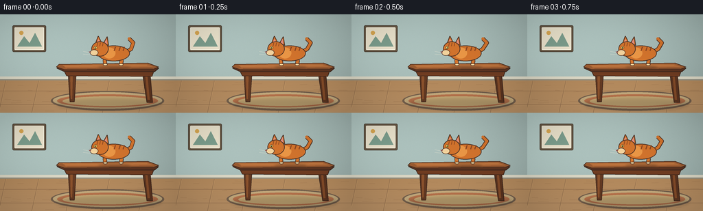

CODING AGENTS AS PIXEL WORLD MODELS
traex/GPT-5.6-Sol · dynamic_spatial_relationship_0011
点击播放 · 原生 RGB 像素
逐轮保存的候选
回放视频、检查图与代码变化。
每份候选均可单独播放。实际图片检查记录在下方工具轨迹中。
候选 01播放与检查图
点击播放 · 原生 RGB 像素


展开代码变化
--- 上一保存版本
+++ 本次保存版本
@@ -0,0 +1,293 @@
+from pathlib import Path
+import math
+import numpy as np
+from PIL import Image, ImageDraw, ImageFilter
+import artifact_io
+
+W, H, N = 256, 144, 20
+S = 4
+rng = np.random.default_rng(1109)
+
+
+def sc(v):
+ return int(round(v * S))
+
+
+def pts(seq):
+ return [(sc(x), sc(y)) for x, y in seq]
+
+
+def ellipse(d, box, fill, outline=None, width=1):
+ d.ellipse(tuple(sc(v) for v in box), fill=fill, outline=outline, width=sc(width) if outline else 1)
+
+
+def polygon(d, xy, fill, outline=None, width=1):
+ d.polygon(pts(xy), fill=fill)
+ if outline:
+ d.line(pts(list(xy) + [xy[0]]), fill=outline, width=sc(width), joint="curve")
+
+
+def line(d, xy, fill, width=1):
+ d.line(pts(xy), fill=fill, width=sc(width), joint="curve")
+
+
+def rounded(d, box, radius, fill, outline=None, width=1):
+ d.rounded_rectangle(tuple(sc(v) for v in box), radius=sc(radius), fill=fill,
+ outline=outline, width=sc(width) if outline else 1)
+
+
+def make_room():
+ hh, ww = H*S, W*S
+ y = np.arange(hh)[:, None]
+ x = np.arange(ww)[None, :]
+ wall = np.zeros((hh, ww, 3), dtype=np.float32)
+ # Calm teal wall, gently lit from upper left.
+ light = 1.0 - 0.11*(x/ww) - 0.08*(y/hh)
+ wall[..., 0] = 188*light
+ wall[..., 1] = 211*light
+ wall[..., 2] = 206*light
+ # restrained paper/plaster texture
+ noise = rng.normal(0, 1.35, (hh, ww, 1))
+ wall += noise
+ wall = np.uint8(np.clip(wall, 0, 255))
+ im = Image.fromarray(wall, "RGB")
+ d = ImageDraw.Draw(im)
+
+ # Framed minimal artwork on upper-left wall.
+ rounded(d, (18, 16, 67, 55), 2, (105, 88, 68), (79, 68, 56), 1)
+ rounded(d, (21, 19, 64, 52), 1, (238, 230, 207), (250, 246, 228), 1)
+ polygon(d, [(25,47),(35,32),(43,42),(51,27),(61,47)], (126,160,143))
+ ellipse(d, (28,24,34,30), (220,170,84))
+
+ # Baseboard and floor.
+ d.rectangle((0, sc(91), sc(W), sc(96)), fill=(222, 218, 199))
+ d.rectangle((0, sc(95), sc(W), sc(97)), fill=(149, 145, 130))
+ floor_poly = [(0,97),(256,97),(256,144),(0,144)]
+ polygon(d, floor_poly, (181, 139, 94))
+ # floor gradient overlays
+ for yy in range(97, 144):
+ c = int((yy-97)/47*13)
+ d.line([(0,sc(yy)),(sc(256),sc(yy))], fill=(181+c,139+c,94+c), width=sc(1))
+ # floor boards and grain
+ for xx in [8, 56, 106, 159, 212]:
+ line(d, [(xx,97),(xx-10,144)], (139,105,75), .45)
+ line(d, [(xx+1,97),(xx-9,144)], (209,165,111), .35)
+ for yy in [112,132]:
+ line(d, [(0,yy),(256,yy)], (148,111,77), .5)
+ for _ in range(28):
+ yy = rng.uniform(100,143); xx = rng.uniform(0,255); ln = rng.uniform(5,23)
+ line(d, [(xx,yy),(min(256,xx+ln),yy+rng.uniform(-.3,.3))], (159,119,80), .25)
+
+ # Rug establishes floor plane beneath table, still leaves open destination on left.
+ ellipse(d, (74,112,239,141), (119, 98, 78))
+ ellipse(d, (77,114,236,138), (199, 173, 127))
+ ellipse(d, (83,117,230,136), (188, 118, 78))
+ ellipse(d, (91,120,222,134), (210, 180, 125))
+ return im
+
+
+def draw_table(im):
+ d = ImageDraw.Draw(im)
+ # soft cast shadow
+ sh = Image.new("RGBA", im.size, (0,0,0,0)); sd = ImageDraw.Draw(sh)
+ sd.ellipse((sc(82),sc(122),sc(235),sc(140)), fill=(45,34,29,52))
+ sh = sh.filter(ImageFilter.GaussianBlur(sc(2.5)))
+ im.paste(sh, (0,0), sh)
+ d = ImageDraw.Draw(im)
+ # rear/near legs, carefully separated for readable silhouette
+ polygon(d, [(99,82),(111,82),(108,128),(102,128)], (100,58,35), (68,43,31), 1)
+ polygon(d, [(207,82),(218,82),(222,129),(214,129)], (91,52,32), (63,40,29), 1)
+ # highlights on legs
+ polygon(d, [(102,84),(106,84),(105,124),(103,124)], (141,83,45))
+ polygon(d, [(211,84),(214,84),(218,125),(215,125)], (133,76,41))
+ # apron below tabletop
+ polygon(d, [(92,80),(225,80),(221,91),(97,90)], (113,61,34), (67,40,28), 1)
+ line(d, [(100,84),(217,84)], (160,91,49), .8)
+ # solid tabletop and top plane
+ polygon(d, [(85,75),(215,73),(231,79),(225,84),(94,84),(83,79)], (92,52,33), (58,38,29), 1)
+ polygon(d, [(86,73),(215,71),(231,77),(224,80),(94,81),(82,77)], (154,91,49), (72,44,30), 1)
+ polygon(d, [(91,74),(213,72.5),(224,77),(96,78.5)], (180,108,57))
+ line(d, [(95,76),(214,74.5)], (205,134,75), .65)
+ line(d, [(98,79.3),(222,78.4)], (91,51,32), .55)
+
+
+def cat_state(i):
+ # Return center x, paw/contact level, body angle, pose mode.
+ if i <= 3:
+ return 166 + 0.5*math.sin(i*1.3), 73.6, 0, "stand"
+ if i == 4:
+ return 165, 73.6, 2, "crouch"
+ if i == 5:
+ return 160, 73.4, -5, "launch"
+ # airborne arc, deliberately traversing the table's left boundary
+ flight = {
+ 6:(151,69,-10,"launch"), 7:(140,66,-10,"stretch"),
+ 8:(127,68,-6,"stretch"), 9:(114,75,1,"tuck"),
+ 10:(101,84,7,"tuck"), 11:(87,96,10,"stretch"),
+ 12:(73,110,7,"landing"), 13:(60,124,2,"landing"),
+ }
+ if i in flight:
+ return flight[i]
+ # running away on floor, entirely left of table
+ ending = {14:(51,126,0,"run"),15:(45,126,0,"run"),16:(40,126,0,"run"),
+ 17:(37,126,0,"standfloor"),18:(35,126,0,"standfloor"),19:(34,126,0,"standfloor")}
+ return ending[i]
+
+
+def transform(local_points, cx, cy, angle):
+ a = math.radians(angle); ca, sa = math.cos(a), math.sin(a)
+ out=[]
+ for x,y in local_points:
+ out.append((cx+x*ca-y*sa, cy+x*sa+y*ca))
+ return out
+
+
+def draw_cat(im, i):
+ cx, ground, angle, pose = cat_state(i)
+
+ # Contact/cast shadow, separated from table shadow and animated in scale.
+ shadow = Image.new("RGBA", im.size, (0,0,0,0)); sd=ImageDraw.Draw(shadow)
+ if i <= 5:
+ sd.ellipse((sc(cx-23),sc(75.3),sc(cx+24),sc(79.2)), fill=(35,25,20,65))
+ else:
+ dist = max(0, 126-ground)
+ rad = max(7, 23-dist*.16)
+ sd.ellipse((sc(cx-rad),sc(126.5),sc(cx+rad),sc(130.5)), fill=(30,25,22,max(18,72-int(dist))))
+ shadow=shadow.filter(ImageFilter.GaussianBlur(sc(1.5)))
+ im.paste(shadow,(0,0),shadow)
+
+ # A few restrained speed lines and landing dust make direction unmistakable.
+ d=ImageDraw.Draw(im, "RGBA")
+ if 7 <= i <= 11:
+ for k in range(3):
+ yy=ground-18+k*5
+ line(d, [(cx+23+k*2,yy),(cx+34+k*4,yy+1)], (245,238,214,80-15*k), .7)
+ if i in (13,14,15):
+ dust_alpha = 95-(i-13)*28
+ for dx,dy,r in [(14,-1,3),(20,0,2),(9,1,2.2)]:
+ ellipse(d,(cx+dx-r,126+dy-r,cx+dx+r,126+dy+r),(225,195,151,dust_alpha))
+
+ # Cat is designed in a local frame: body axis x, baseline around y=0.
+ layer=Image.new("RGBA", im.size,(0,0,0,0)); cd=ImageDraw.Draw(layer,"RGBA")
+ fur=(211,116,45,255); fur_light=(235,151,70,255); fur_dark=(142,72,34,255)
+ edge=(73,48,37,255); cream=(244,211,157,255)
+
+ # Pose-specific legs are behind torso. Coordinates relative to body center at y=ground-15.
+ base_y = ground-15
+ if pose == "stand":
+ legs=[(-12,5,-13,15), (8,5,10,15)]
+ elif pose == "crouch":
+ legs=[(-10,5,-18,13), (9,5,18,13)]
+ elif pose == "launch":
+ legs=[(-9,5,-17,13), (8,5,21,9)]
+ elif pose == "stretch":
+ phase = (i%2)*2-1
+ legs=[(-10,4,-24+phase,10), (8,5,22-phase,10)]
+ elif pose == "tuck":
+ legs=[(-9,5,-4,12), (9,5,14,12)]
+ elif pose == "landing":
+ legs=[(-10,5,-23,13), (8,5,18,14)]
+ elif pose == "run":
+ if i%2:
+ legs=[(-9,5,-22,14),(8,5,20,12)]
+ else:
+ legs=[(-9,5,-1,14),(8,5,5,14)]
+ else:
+ legs=[(-11,5,-12,15),(8,5,9,15)]
+
+ def T(p): return transform(p,cx,base_y,angle)
+ # Tail behind body: rises and curls rightward. Its tip visibly changes over time.
+ wag=3*math.sin(i*.75)
+ tail=T([(15,-2),(25,-8),(28+wag,-17),(22+wag,-23)])
+ cd.line(pts(tail),fill=edge,width=sc(6),joint="curve")
+ cd.line(pts(tail),fill=fur,width=sc(4),joint="curve")
+ cd.ellipse((sc(tail[-1][0]-2),sc(tail[-1][1]-2),sc(tail[-1][0]+2),sc(tail[-1][1]+2)),fill=fur)
+
+ # Legs: tapered polygons and cream paws.
+ for j,(sx,sy,ex,ey) in enumerate(legs):
+ # bent legs with subtle knee
+ mx=(sx+ex)*.5 + (2 if j else -1); my=(sy+ey)*.5-1
+ seg=T([(sx,sy),(mx,my),(ex,ey)])
+ cd.line(pts(seg),fill=edge,width=sc(6),joint="curve")
+ cd.line(pts(seg),fill=fur,width=sc(4.2),joint="curve")
+ px,py=seg[-1]
+ cd.ellipse((sc(px-3),sc(py-1.8),sc(px+3.5),sc(py+1.7)),fill=cream,outline=edge,width=sc(.7))
+
+ # Torso silhouette.
+ body_center=T([(0,-1)])[0]
+ # rotated ellipse rendered on compact patch to avoid jagged geometry
+ bw,bh=45,22
+ patch=Image.new("RGBA",(sc(58),sc(38)),(0,0,0,0)); pd=ImageDraw.Draw(patch)
+ pd.ellipse((sc(5),sc(7),sc(52),sc(30)),fill=fur,outline=edge,width=sc(1.1))
+ pd.ellipse((sc(13),sc(10),sc(31),sc(26)),fill=fur_light)
+ # stripe marks
+ for xx in [31,38,44]:
+ pd.line([(sc(xx),sc(9)),(sc(xx-2),sc(15))],fill=fur_dark,width=sc(1.5))
+ patch=patch.rotate(-angle,resample=Image.Resampling.BICUBIC,expand=True)
+ layer.alpha_composite(patch,(int(body_center[0]*S-patch.width/2),int(body_center[1]*S-patch.height/2)))
+ cd=ImageDraw.Draw(layer,"RGBA")
+
+ # Neck and head, facing left.
+ hx,hy=T([(-20,-7)])[0]
+ # ears behind head
+ ears=T([(-27,-16),(-23,-27),(-18,-17),(-15,-17),(-10,-26),(-8,-13)])
+ polygon(cd, [ears[0],ears[1],ears[2]], fur, edge, .9)
+ polygon(cd, [ears[3],ears[4],ears[5]], fur, edge, .9)
+ # pink inner ears
+ ie1=T([(-25,-17),(-23,-23),(-20,-17)])
+ ie2=T([(-14,-17),(-11,-23),(-10,-15)])
+ polygon(cd,ie1,(229,144,128,255)); polygon(cd,ie2,(229,144,128,255))
+ # head and muzzle
+ ellipse(cd,(hx-13,hy-12,hx+12,hy+10),fur,edge,1)
+ mx,my=T([(-30,-3)])[0]
+ ellipse(cd,(mx-5,my-4,mx+7,my+5),cream,edge,.7)
+ # forehead stripes
+ for off in [-3,1,5]:
+ p=T([(-21+off,-17),(-22+off,-12)])
+ line(cd,p,fur_dark,1)
+ # eye, nose, smile; the eye is large enough to survive downsample.
+ ex,ey=T([(-27,-10)])[0]
+ ellipse(cd,(ex-2.2,ey-1.8,ex+2.2,ey+2.1),(246,212,89,255),edge,.6)
+ ellipse(cd,(ex-.55,ey-1.2,ex+.55,ey+1.5),(35,32,25,255))
+ nx,ny=T([(-35,-3)])[0]
+ polygon(cd,[(nx-1.8,ny-1),(nx+1.8,ny-1),(nx,ny+1.4)],(133,73,71,255))
+ # whiskers
+ for off in [-1,2]:
+ p1=T([(-34,-1+off)]); p2=T([(-45,-3+off*1.3)])
+ line(cd,p1+p2,(245,237,215,220),.55)
+ # eye glint
+ ellipse(cd,(ex-.7,ey-1.05,ex-.05,ey-.4),(255,255,244,255))
+
+ # Composite cat and add tiny fur-edge highlight.
+ im.paste(layer,(0,0),layer)
+
+
+def add_cinematic_finish(im):
+ # Subtle vignette, texture, and warm light; no cuts or camera movement.
+ arr=np.asarray(im).astype(np.float32)
+ yy,xx=np.mgrid[0:H*S,0:W*S]
+ nx=(xx-W*S/2)/(W*S/2); ny=(yy-H*S/2)/(H*S/2)
+ vig=np.clip(1-0.10*(nx*nx+ny*ny),.82,1)[...,None]
+ arr*=vig
+ # very fine stable grain
+ grain=rng.normal(0,.45,arr.shape[:2])[...,None]
+ arr+=grain
+ return Image.fromarray(np.uint8(np.clip(arr,0,255))).resize((W,H),Image.Resampling.LANCZOS)
+
+
+def generate():
+ frames=[]
+ for i in range(N):
+ # rebuilding retains stable geometry; fixed seed-generated base texture is copied.
+ base=ROOM.copy()
+ draw_table(base)
+ draw_cat(base,i)
+ frame=add_cinematic_finish(base).convert("RGB")
+ frames.append(np.asarray(frame,dtype=np.uint8))
+ return np.stack(frames,axis=0)
+
+
+ROOM=make_room()
+if __name__ == "__main__":
+ frames=generate()
+ artifact_io.save(frames,Path(__file__).resolve().parent)
候选 02播放与检查图
点击播放 · 原生 RGB 像素
展开代码变化
--- 上一保存版本
+++ 本次保存版本
@@ -50,7 +50,7 @@
noise = rng.normal(0, 1.35, (hh, ww, 1))
wall += noise
wall = np.uint8(np.clip(wall, 0, 255))
- im = Image.fromarray(wall, "RGB")
+ im = Image.fromarray(wall)
d = ImageDraw.Draw(im)
# Framed minimal artwork on upper-left wall.
@@ -129,8 +129,8 @@
if i in flight:
return flight[i]
# running away on floor, entirely left of table
- ending = {14:(51,126,0,"run"),15:(45,126,0,"run"),16:(40,126,0,"run"),
- 17:(37,126,0,"standfloor"),18:(35,126,0,"standfloor"),19:(34,126,0,"standfloor")}
+ ending = {14:(54,126,0,"run"),15:(49,126,0,"run"),16:(46,126,0,"run"),
+ 17:(44,126,0,"standfloor"),18:(43,126,0,"standfloor"),19:(43,126,0,"standfloor")}
return ending[i]
@@ -269,9 +269,8 @@
nx=(xx-W*S/2)/(W*S/2); ny=(yy-H*S/2)/(H*S/2)
vig=np.clip(1-0.10*(nx*nx+ny*ny),.82,1)[...,None]
arr*=vig
- # very fine stable grain
- grain=rng.normal(0,.45,arr.shape[:2])[...,None]
- arr+=grain
+ # Very fine *fixed* grain: texture without temporal background shimmer.
+ arr+=GRAIN
return Image.fromarray(np.uint8(np.clip(arr,0,255))).resize((W,H),Image.Resampling.LANCZOS)
@@ -288,6 +287,7 @@
ROOM=make_room()
+GRAIN=rng.normal(0,.45,(H*S,W*S,1))
if __name__ == "__main__":
frames=generate()
artifact_io.save(frames,Path(__file__).resolve().parent)
候选 03播放与检查图
可观测工具轨迹
实际执行的命令与返回图片。
命令 1exit 0
/bin/bash -lc "cat prompt.txt && printf '\\n--- RULES ---\\n' && cat GENERATION_RULES.md && printf '\\n--- SPEC ---\\n' && cat task_spec.json"
命令 2exit 0
/bin/bash -lc "find . -maxdepth 3 -type f -printf '%p\\n' | sort && printf '\\n--- tools ---\\n' && command -v ffmpeg || true && command -v python3 || true && command -v convert || true"
命令 3exit 0
/bin/bash -lc 'cat artifact_io.py'
命令 4exit 0
/bin/bash -lc "cat > generate.py <<'PY'
from pathlib import Path
import math
import numpy as np
from PIL import Image, ImageDraw, ImageFilter
import artifact_io
W, H, N = 256, 144, 20
S = 4
rng = np.random.default_rng(1109)
def sc(v):
return int(round(v * S))
def pts(seq):
return [(sc(x), sc(y)) for x, y in seq]
def ellipse(d, box, fill, outline=None, width=1):
d.ellipse(tuple(sc(v) for v in box), fill=fill, outline=outline, width=sc(width) if outline else 1)
def polygon(d, xy, fill, outline=None, width=1):
d.polygon(pts(xy), fill=fill)
if outline:
d.line(pts(list(xy) + [xy[0]]), fill=outline, width=sc(width), joint=\"curve\")
def line(d, xy, fill, width=1):
d.line(pts(xy), fill=fill, width=sc(width), joint=\"curve\")
def rounded(d, box, radius, fill, outline=None, width=1):
d.rounded_rectangle(tuple(sc(v) for v in box), radius=sc(radius), fill=fill,
outline=outline, width=sc(width) if outline else 1)
def make_room():
hh, ww = H*S, W*S
y = np.arange(hh)[:, None]
x = np.arange(ww)[None, :]
wall = np.zeros((hh, ww, 3), dtype=np.float32)
# Calm teal wall, gently lit from upper left.
light = 1.0 - 0.11*(x/ww) - 0.08*(y/hh)
wall[..., 0] = 188*light
wall[..., 1] = 211*light
wall[..., 2] = 206*light
# restrained paper/plaster texture
noise = rng.normal(0, 1.35, (hh, ww, 1))
wall += noise
wall = np.uint8(np.clip(wall, 0, 255))
im = Image.fromarray(wall, \"RGB\")
d = ImageDraw.Draw(im)
# Framed minimal artwork on upper-left wall.
rounded(d, (18, 16, 67, 55), 2, (105, 88, 68), (79, 68, 56), 1)
rounded(d, (21, 19, 64, 52), 1, (238, 230, 207), (250, 246, 228), 1)
polygon(d, [(25,47),(35,32),(43,42),(51,27),(61,47)], (126,160,143))
ellipse(d, (28,24,34,30), (220,170,84))
# Baseboard and floor.
d.rectangle((0, sc(91), sc(W), sc(96)), fill=(222, 218, 199))
d.rectangle((0, sc(95), sc(W), sc(97)), fill=(149, 145, 130))
floor_poly = [(0,97),(256,97),(256,144),(0,144)]
polygon(d, floor_poly, (181, 139, 94))
# floor gradient overlays
for yy in range(97, 144):
c = int((yy-97)/47*13)
d.line([(0,sc(yy)),(sc(256),sc(yy))], fill=(181+c,139+c,94+c), width=sc(1))
# floor boards and grain
for xx in [8, 56, 106, 159, 212]:
line(d, [(xx,97),(xx-10,144)], (139,105,75), .45)
line(d, [(xx+1,97),(xx-9,144)], (209,165,111), .35)
for yy in [112,132]:
line(d, [(0,yy),(256,yy)], (148,111,77), .5)
for _ in range(28):
yy = rng.uniform(100,143); xx = rng.uniform(0,255); ln = rng.uniform(5,23)
line(d, [(xx,yy),(min(256,xx+ln),yy+rng.uniform(-.3,.3))], (159,119,80), .25)
# Rug establishes floor plane beneath table, still leaves open destination on left.
ellipse(d, (74,112,239,141), (119, 98, 78))
ellipse(d, (77,114,236,138), (199, 173, 127))
ellipse(d, (83,117,230,136), (188, 118, 78))
ellipse(d, (91,120,222,134), (210, 180, 125))
return im
def draw_table(im):
d = ImageDraw.Draw(im)
# soft cast shadow
sh = Image.new(\"RGBA\", im.size, (0,0,0,0)); sd = ImageDraw.Draw(sh)
sd.ellipse((sc(82),sc(122),sc(235),sc(140)), fill=(45,34,29,52))
sh = sh.filter(ImageFilter.GaussianBlur(sc(2.5)))
im.paste(sh, (0,0), sh)
d = ImageDraw.Draw(im)
# rear/near legs, carefully separated for readable silhouette
polygon(d, [(99,82),(111,82),(108,128),(102,128)], (100,58,35), (68,43,31), 1)
polygon(d, [(207,82),(218,82),(222,129),(214,129)], (91,52,32), (63,40,29), 1)
# highlights on legs
polygon(d, [(102,84),(106,84),(105,124),(103,124)], (141,83,45))
polygon(d, [(211,84),(214,84),(218,125),(215,125)], (133,76,41))
# apron below tabletop
polygon(d, [(92,80),(225,80),(221,91),(97,90)], (113,61,34), (67,40,28), 1)
line(d, [(100,84),(217,84)], (160,91,49), .8)
# solid tabletop and top plane
polygon(d, [(85,75),(215,73),(231,79),(225,84),(94,84),(83,79)], (92,52,33), (58,38,29), 1)
polygon(d, [(86,73),(215,71),(231,77),(224,80),(94,81),(82,77)], (154,91,49), (72,44,30), 1)
polygon(d, [(91,74),(213,72.5),(224,77),(96,78.5)], (180,108,57))
line(d, [(95,76),(214,74.5)], (205,134,75), .65)
line(d, [(98,79.3),(222,78.4)], (91,51,32), .55)
def cat_state(i):
# Return center x, paw/contact level, body angle, pose mode.
if i <= 3:
return 166 + 0.5*math.sin(i*1.3), 73.6, 0, \"stand\"
if i == 4:
return 165, 73.6, 2, \"crouch\"
if i == 5:
return 160, 73.4, -5, \"launch\"
# airborne arc, deliberately traversing the table's left boundary
flight = {
6:(151,69,-10,\"launch\"), 7:(140,66,-10,\"stretch\"),
8:(127,68,-6,\"stretch\"), 9:(114,75,1,\"tuck\"),
10:(101,84,7,\"tuck\"), 11:(87,96,10,\"stretch\"),
12:(73,110,7,\"landing\"), 13:(60,124,2,\"landing\"),
}
if i in flight:
return flight[i]
# running away on floor, entirely left of table
ending = {14:(51,126,0,\"run\"),15:(45,126,0,\"run\"),16:(40,126,0,\"run\"),
17:(37,126,0,\"standfloor\"),18:(35,126,0,\"standfloor\"),19:(34,126,0,\"standfloor\")}
return ending[i]
def transform(local_points, cx, cy, angle):
a = math.radians(angle); ca, sa = math.cos(a), math.sin(a)
out=[]
for x,y in local_points:
out.append((cx+x*ca-y*sa, cy+x*sa+y*ca))
return out
def draw_cat(im, i):
cx, ground, angle, pose = cat_state(i)
# Contact/cast shadow, separated from table shadow and animated in scale.
shadow = Image.new(\"RGBA\", im.size, (0,0,0,0)); sd=ImageDraw.Draw(shadow)
if i <= 5:
sd.ellipse((sc(cx-23),sc(75.3),sc(cx+24),sc(79.2)), fill=(35,25,20,65))
else:
dist = max(0, 126-ground)
rad = max(7, 23-dist*.16)
sd.ellipse((sc(cx-rad),sc(126.5),sc(cx+rad),sc(130.5)), fill=(30,25,22,max(18,72-int(dist))))
shadow=shadow.filter(ImageFilter.GaussianBlur(sc(1.5)))
im.paste(shadow,(0,0),shadow)
# A few restrained speed lines and landing dust make direction unmistakable.
d=ImageDraw.Draw(im, \"RGBA\")
if 7 <= i <= 11:
for k in range(3):
yy=ground-18+k*5
line(d, [(cx+23+k*2,yy),(cx+34+k*4,yy+1)], (245,238,214,80-15*k), .7)
if i in (13,14,15):
dust_alpha = 95-(i-13)*28
for dx,dy,r in [(14,-1,3),(20,0,2),(9,1,2.2)]:
ellipse(d,(cx+dx-r,126+dy-r,cx+dx+r,126+dy+r),(225,195,151,dust_alpha))
# Cat is designed in a local frame: body axis x, baseline around y=0.
layer=Image.new(\"RGBA\", im.size,(0,0,0,0)); cd=ImageDraw.Draw(layer,\"RGBA\")
fur=(211,116,45,255); fur_light=(235,151,70,255); fur_dark=(142,72,34,255)
edge=(73,48,37,255); cream=(244,211,157,255)
# Pose-specific legs are behind torso. Coordinates relative to body center at y=ground-15.
base_y = ground-15
if pose == \"stand\":
legs=[(-12,5,-13,15), (8,5,10,15)]
elif pose == \"crouch\":
legs=[(-10,5,-18,13), (9,5,18,13)]
elif pose == \"launch\":
legs=[(-9,5,-17,13), (8,5,21,9)]
elif pose == \"stretch\":
phase = (i%2)*2-1
legs=[(-10,4,-24+phase,10), (8,5,22-phase,10)]
elif pose == \"tuck\":
legs=[(-9,5,-4,12), (9,5,14,12)]
elif pose == \"landing\":
legs=[(-10,5,-23,13), (8,5,18,14)]
elif pose == \"run\":
if i%2:
legs=[(-9,5,-22,14),(8,5,20,12)]
else:
legs=[(-9,5,-1,14),(8,5,5,14)]
else:
legs=[(-11,5,-12,15),(8,5,9,15)]
def T(p): return transform(p,cx,base_y,angle)
# Tail behind body: rises and curls rightward. Its tip visibly changes over time.
wag=3*math.sin(i*.75)
tail=T([(15,-2),(25,-8),(28+wag,-17),(22+wag,-23)])
cd.line(pts(tail),fill=edge,width=sc(6),joint=\"curve\")
cd.line(pts(tail),fill=fur,width=sc(4),joint=\"curve\")
cd.ellipse((sc(tail[-1][0]-2),sc(tail[-1][1]-2),sc(tail[-1][0]+2),sc(tail[-1][1]+2)),fill=fur)
# Legs: tapered polygons and cream paws.
for j,(sx,sy,ex,ey) in enumerate(legs):
# bent legs with subtle knee
mx=(sx+ex)*.5 + (2 if j else -1); my=(sy+ey)*.5-1
seg=T([(sx,sy),(mx,my),(ex,ey)])
cd.line(pts(seg),fill=edge,width=sc(6),joint=\"curve\")
cd.line(pts(seg),fill=fur,width=sc(4.2),joint=\"curve\")
px,py=seg[-1]
cd.ellipse((sc(px-3),sc(py-1.8),sc(px+3.5),sc(py+1.7)),fill=cream,outline=edge,width=sc(.7))
# Torso silhouette.
body_center=T([(0,-1)])[0]
# rotated ellipse rendered on compact patch to avoid jagged geometry
bw,bh=45,22
patch=Image.new(\"RGBA\",(sc(58),sc(38)),(0,0,0,0)); pd=ImageDraw.Draw(patch)
pd.ellipse((sc(5),sc(7),sc(52),sc(30)),fill=fur,outline=edge,width=sc(1.1))
pd.ellipse((sc(13),sc(10),sc(31),sc(26)),fill=fur_light)
# stripe marks
for xx in [31,38,44]:
pd.line([(sc(xx),sc(9)),(sc(xx-2),sc(15))],fill=fur_dark,width=sc(1.5))
patch=patch.rotate(-angle,resample=Image.Resampling.BICUBIC,expand=True)
layer.alpha_composite(patch,(int(body_center[0]*S-patch.width/2),int(body_center[1]*S-patch.height/2)))
cd=ImageDraw.Draw(layer,\"RGBA\")
# Neck and head, facing left.
hx,hy=T([(-20,-7)])[0]
# ears behind head
ears=T([(-27,-16),(-23,-27),(-18,-17),(-15,-17),(-10,-26),(-8,-13)])
polygon(cd, [ears[0],ears[1],ears[2]], fur, edge, .9)
polygon(cd, [ears[3],ears[4],ears[5]], fur, edge, .9)
# pink inner ears
ie1=T([(-25,-17),(-23,-23),(-20,-17)])
ie2=T([(-14,-17),(-11,-23),(-10,-15)])
polygon(cd,ie1,(229,144,128,255)); polygon(cd,ie2,(229,144,128,255))
# head and muzzle
ellipse(cd,(hx-13,hy-12,hx+12,hy+10),fur,edge,1)
mx,my=T([(-30,-3)])[0]
ellipse(cd,(mx-5,my-4,mx+7,my+5),cream,edge,.7)
# forehead stripes
for off in [-3,1,5]:
p=T([(-21+off,-17),(-22+off,-12)])
line(cd,p,fur_dark,1)
# eye, nose, smile; the eye is large enough to survive downsample.
ex,ey=T([(-27,-10)])[0]
ellipse(cd,(ex-2.2,ey-1.8,ex+2.2,ey+2.1),(246,212,89,255),edge,.6)
ellipse(cd,(ex-.55,ey-1.2,ex+.55,ey+1.5),(35,32,25,255))
nx,ny=T([(-35,-3)])[0]
polygon(cd,[(nx-1.8,ny-1),(nx+1.8,ny-1),(nx,ny+1.4)],(133,73,71,255))
# whiskers
for off in [-1,2]:
p1=T([(-34,-1+off)]); p2=T([(-45,-3+off*1.3)])
line(cd,p1+p2,(245,237,215,220),.55)
# eye glint
ellipse(cd,(ex-.7,ey-1.05,ex-.05,ey-.4),(255,255,244,255))
# Composite cat and add tiny fur-edge highlight.
im.paste(layer,(0,0),layer)
def add_cinematic_finish(im):
# Subtle vignette, texture, and warm light; no cuts or camera movement.
arr=np.asarray(im).astype(np.float32)
yy,xx=np.mgrid[0:H*S,0:W*S]
nx=(xx-W*S/2)/(W*S/2); ny=(yy-H*S/2)/(H*S/2)
vig=np.clip(1-0.10*(nx*nx+ny*ny),.82,1)[...,None]
arr*=vig
# very fine stable grain
grain=rng.normal(0,.45,arr.shape[:2])[...,None]
arr+=grain
return Image.fromarray(np.uint8(np.clip(arr,0,255))).resize((W,H),Image.Resampling.LANCZOS)
def generate():
frames=[]
for i in range(N):
# rebuilding retains stable geometry; fixed seed-generated base texture is copied.
base=ROOM.copy()
draw_table(base)
draw_cat(base,i)
frame=add_cinematic_finish(base).convert(\"RGB\")
frames.append(np.asarray(frame,dtype=np.uint8))
return np.stack(frames,axis=0)
ROOM=make_room()
if __name__ == \"__main__\":
frames=generate()
artifact_io.save(frames,Path(__file__).resolve().parent)
PY
python3 generate.py
python3 - <<'PY'
import numpy as np
z=np.load('pixels.npz')['pixels']
print('pixels',z.shape,z.dtype,'unique',len(np.unique(z)),'bytes',z.nbytes)
from PIL import Image
im=Image.open('inspection.png'); print('inspection',im.size)
PY"命令 5exit 0
/bin/bash -lc "du -h pixels.npz index.html inspection.png frames/00.png frames/19.png && python3 - <<'PY'
from PIL import Image
import numpy as np
ims=np.stack([np.asarray(Image.open(f'frames/{i:02d}.png')) for i in range(20)])
for i in range(1,20):
print(i, np.mean(np.abs(ims[i].astype(int)-ims[i-1].astype(int))), np.mean(np.any(ims[i]"'!=ims[i-1],axis=2)))
PY'命令 6exit 0
/bin/bash -lc 'python3 -m py_compile generate.py && git status --short 2>/dev/null || true'
命令 7exit 0
/bin/bash -lc "python3 generate.py && python3 - <<'PY'
from pathlib import Path
from PIL import Image
import numpy as np
files=sorted(Path('frames').glob('*.png'))
a=np.stack([np.asarray(Image.open(p)) for p in files])
print('shape/dtype/range:',a.shape,a.dtype,(a.min(),a.max()))
print('frame files:',len(files),'outputs:',all(Path(p).exists() for p in ['pixels.npz','index.html','inspection.png','transition_check.png']))
for i in [1,3,4,5,8,12,13,16,19]:
print(f'{i-1:02d}->{i:02d}', round(float(np.abs(a[i].astype(int)-a[i-1].astype(int)).mean()),3))
PY"保存候选 3 份；完成命令 7 次；可验证图片返回 0 张。原始 API 响应与完整日志保留在本地。